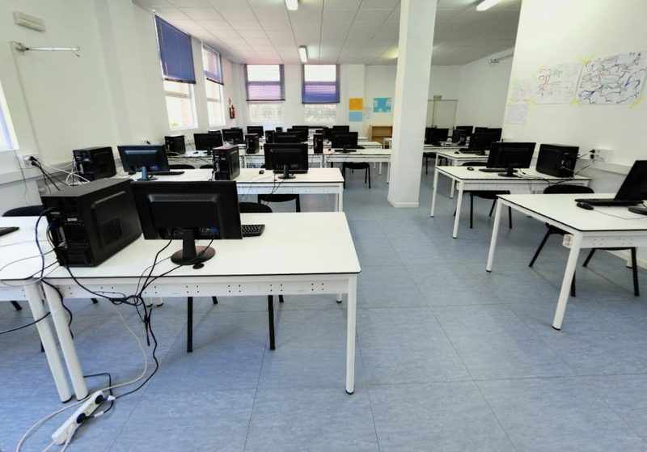
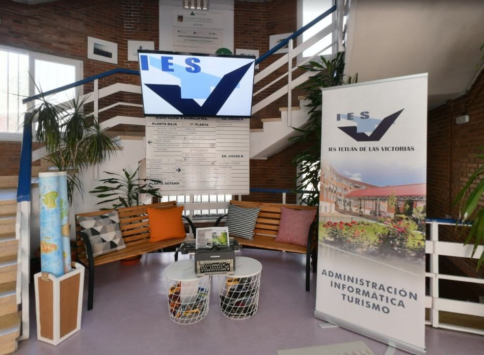
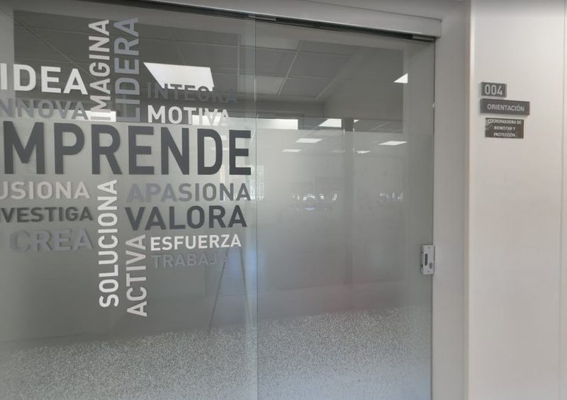
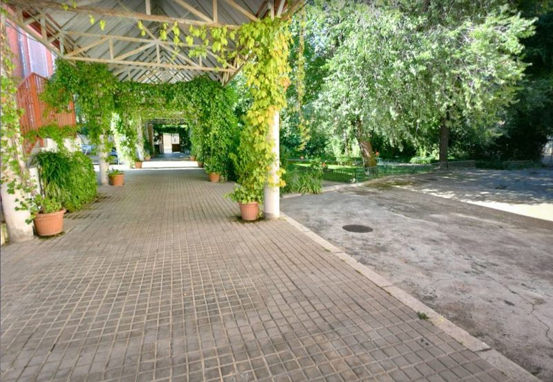
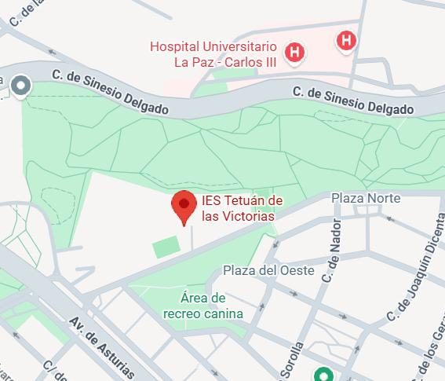

Aulas y Talleres
El centro cuenta con aulas técnicas equipadas con última tecnología, adaptadas a cada rama profesional como:
- Informática y Comunicaciones
- Administración y Gestión
- Hostelería y Turismo

El IES Tetuán de las Victorias es un centro educativo público, está ubicado en el barrio de La Ventilla en la Comunidad de Madrid. Este centro está comprometido con la excelencia académica y la formación práctica. Destaca por ofrecer una amplia oferta educativa en Formación Profesional. El objetivo principal es formar alumnos para el mercado laboral.

El centro cuenta con aulas técnicas equipadas con última tecnología, adaptadas a cada rama profesional como:

Los servicios que ofrece el centro son:

Amplios espacios comunes como la cafetería o el patio exterior, diseñado para el descanso, la desconexión y la convivencia entre los estudiantes de diferentes ciclos formativos.
El centro está situado en el distrito de Tetuán (barrio de La Ventilla), una zona tranquila y muy bien comunicada en el norte de Madrid. El entorno cuenta con parques, zonas comerciales y facilidades para los estudiantes.
